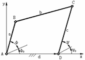

铰链四杆机构的设计

在图1.1所示铰链四杆机构中，两连架杆对应角位置为φ0、ψ0、φ、ψ；各杆的长度分别为a、b、c、d。由图可得两连架杆对应角位置的关系式
（1-1）
式中：
式（1-1）中包含有P0、P1、P2、φ0及ψ0五个特定参数，说明此铰链四杆机构所能满足的两连架杆对应角位置最多为五组。若取φ0=ψ0=0度，则上式有可写成
（1-2）
利用式（1-2）可以设计两两连架杆三组对应角位置的铰链四杆机构，其设计计算步骤如下：
①将三组对应的角位置φ1、ψ1；φ2、ψ2；φ3、ψ3分别代入式（1-2），得方程组
（1-3）
②解上述方程组，可得P0、P1、P2值。
③由可求得m、n及l的值。
④根据实际情况定出曲柄的长度a，从而确定其他三构件的长度b、c、d。
相关链接：
按两连架杆对应位置呈连续函数关系设计铰链四杆机构